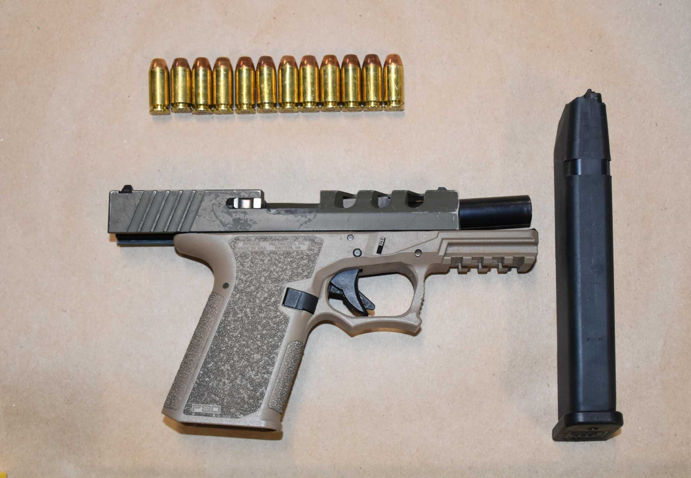

For the month of October 2021, the number of murders and shooting incidents continued to decline in New York City compared to last year. Murder decreased by 9.8% while shooting incidents decreased by 4.4% . There were 382 gun arrests for the month of October 2021, bringing the total number of gun arrests in 2021 to 3,808 – a 13.9% increase compared to 3,343 gun arrests year-to-date in 2020.
Overall index crime in New York City increased by 11.2% in October 2021, compared with October 2020 . While Burglary saw a 13.7% decrease for October 2021 , Robbery increased by 15.8% and Felonious Assault increased by 13.8 %. Through October, overall index crime year-to-date has increased by 1.3% compared to 2020 .
The reduction in shootings and homicides during October 2021 continues a trend that has been carrying over from the summer of 2021, and coincides with the NYPD’s ongoing work to build multiple long-term cases with its law enforcement partners with a focus on the drivers of violence. This is the precision-policing philosophy at work. Central to the NYPD’s comprehensive public safety strategy is the curtailing of gun violence. This includes making gun arrests, and working with our criminal justice partners to address local concerns such as the interdiction of so-called ghost guns – whose proliferation presents a host of investigative challenges to law enforcement.
A 3D printed Ghost Gun, with 3D printed bullets.
When American gun laws were written, legislatsors assumed that firearms would either be imported from abroad by dealers or manufactured domestically by professional gun manufacturers. In recent years, there has been an increasing number of efforts to circumvent these laws by exploiting the loopholes that result from that assumption. Selling gun parts and components that can easily be used to build a firearm is one such loophole since buyers of unfinished gun parts or components are not required to undergo a background check. Similarly, other federal and state laws that regulate gun sales or purchases often do not apply to unfinished parts and components.
Self-assembled firearms—which can be built from kits or 3D printed—are referred to as ghost guns because they do not come with a serial number and are untraceable. In the traditional manufacturing process, the firearm manufacturer or importer will affix a serial number and markings that identify the manufacturer or importer, make, model, and caliber. Using this information, the Bureau of Alcohol, Tobacco, Firearms and Explosives (ATF) can track firearms from the manufacturer or importer through the distribution chain to the first retail purchaser. ATF works extensively with other law enforcement agencies to trace firearms using this technique—in 2017 alone, ATF conducted more than 408,000 traces.
When law enforcement agencies recover firearms that have been used in crimes, the agencies can usually trace the firearms to their first retail purchaser and use that information to investigate and solve the crime. Tracing is a powerful investigative tool, but it is dependent on the ability to identify firearms based on their serial numbers. Because the purveyors of the parts and kits used to make untraceable guns claim that they are not selling firearms, they also assert that these serialization requirements do not apply to them. Without a serial number, law enforcement cannot run a trace search on a firearm, making it difficult, if not impossible, to determine the chain of custody from the gun itself.
Ghost guns have also been used in multiple recent shootings. In 2014 a man who failed a background check and could not legally purchase a gun built an assault rifle from a ghost gun kit, then used it on a rampage at a college campus in Southern California, firing 100 rounds and killing five people. In 2017 a California man prosecutors described as a “deranged, paranoid killer” who was prohibited from owning a gun and under prosecution for multiple crimes, was nevertheless able to kill six people and injure 10 with two assault-style rifles he assembled using parts ordered online. In 2019 a sixteen-year-old boy used a self-assembled untraceable firearm in a school shooting in Santa Clarita, CA, killing two students and injuring three others.